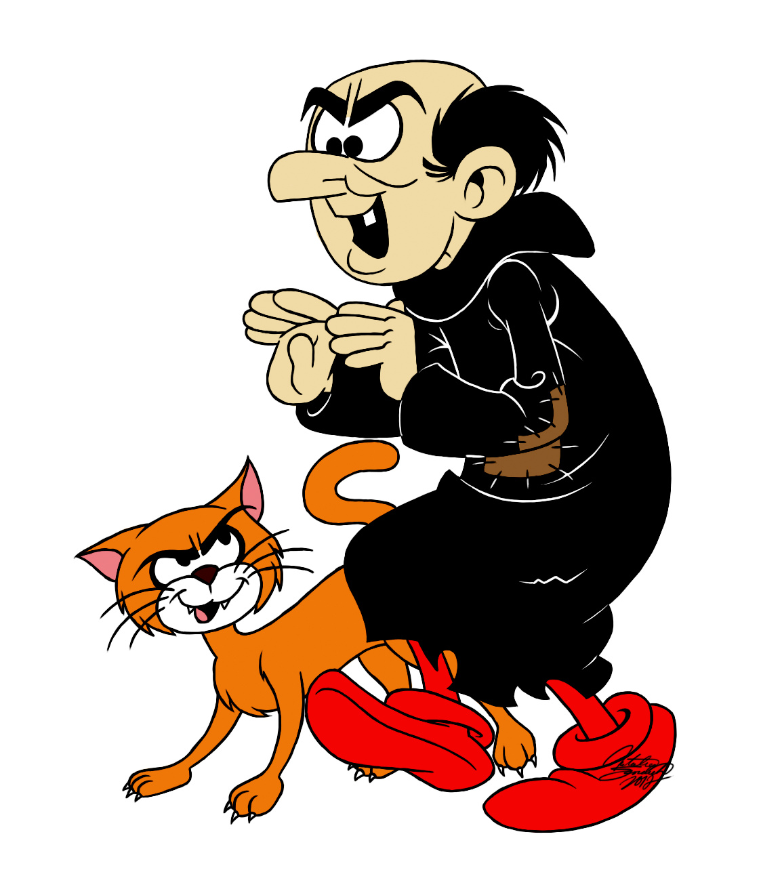

Eu estous a anos tentando capturar os malditos Smurfs, e agora consegui finalmente alguns para vende-los, eles valem ouro, sao bixinhos azuis, pequenos e feio pra caramba, entao comprem ele para me dar dinheiro logo, antes que eles virem raçao de Cruel HAHAHAHAHAHA.

Agora uma cançao:
Folia pra mim Me arriscar no amor Apostar na incerteza Pular de onde for De novo Meu amor
Diziam pra mim Que essa moda passou Que monogamia é papo de doido Mas pra mim é uma honra Ser uma cafona Pra esse povo
Me pinto pra disfarçar Rebusco palavras pra te encantar Reinvento uma moda, faço Bossa Nova Meu futuro, no Rio, será
Chico, se tu me quiseres Sou dessas mulheres de se apaixonar Pode fazer a sua fumaça O Bar da Cachaça vai ser nosso lar
E, Chico, se tu me quiseres Debato política, tomo o teu partido E se for pra repartir o amor Que reparta comigo
Chico, se tu me quiseres Sou dessas mulheres de se apaixonar Pode fazer sua fumaça O Bar da Cachaça vai ser nosso lar
Pois Chico, se tu me quiseres Debato política, tomo o teu partido E se for pra repartir o amor Que reparta comigo, comigo